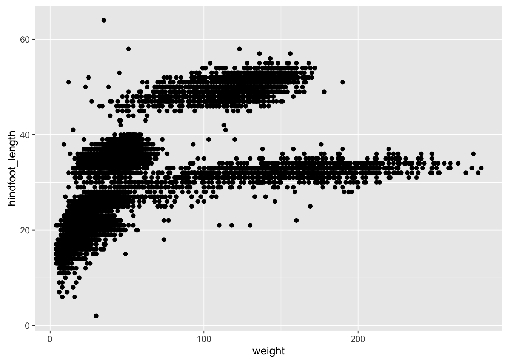
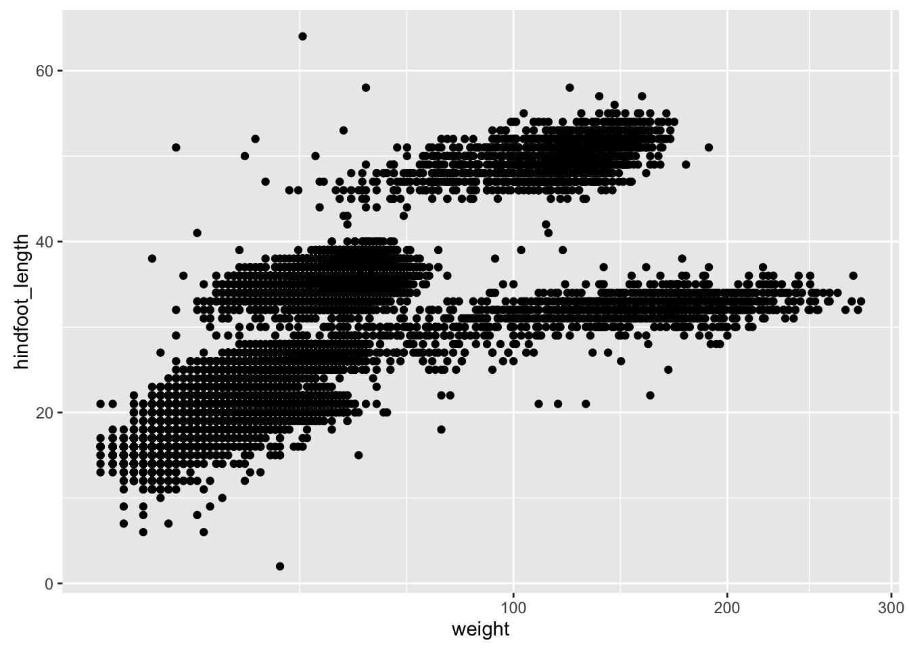
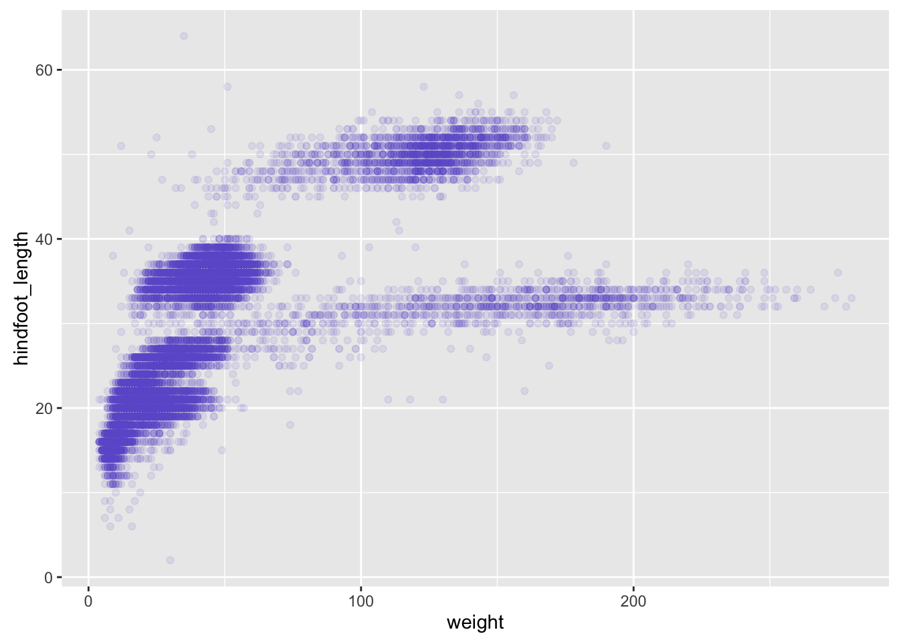
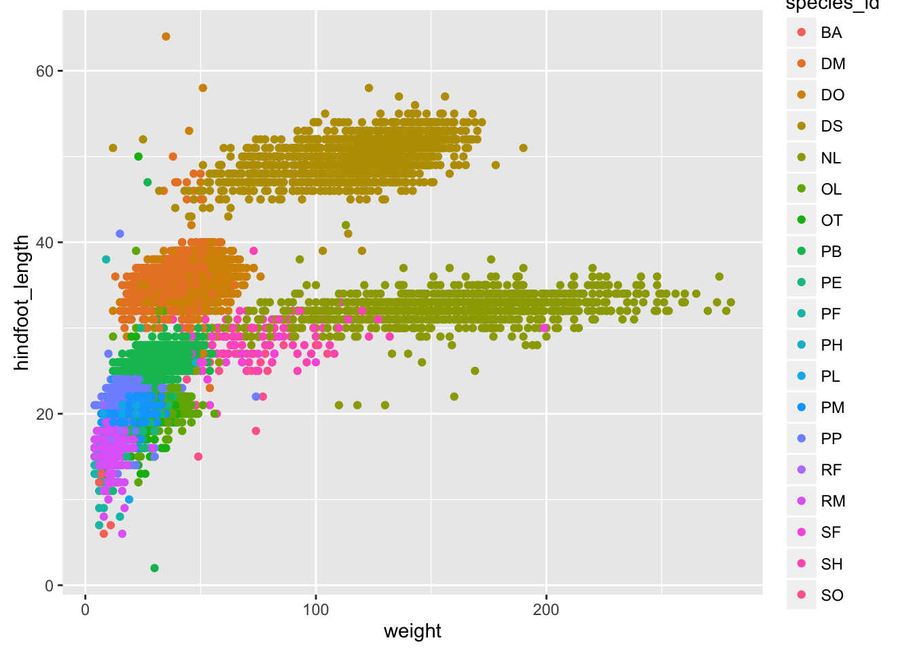

Data visualization with ggplot2 (notes)
Data Carpentry contributors
##
## Attaching package: 'dplyr'## The following objects are masked from 'package:stats':
##
## filter, lag## The following objects are masked from 'package:base':
##
## intersect, setdiff, setequal, unionload libraries
library(ggplot2)
library(dplyr)Mention ggplot vs base graphics
First plot:
ggplot(surveys_complete, aes(x = weight, y = hindfoot_length)) + geom_point()
Key concepts of “grammar of graphics”: - aesthetics map features of the data to features of the visualization (for example, the weight variable is mapped to the y-axis coordinate) - geoms concern what actually gets plotted (here, each row in the data becomes a point in the plot)
ggplot()creates a graphics objects- additional controls added with the
+operator - actual plot made when object is printed
p1 <- ggplot(surveys_complete, aes(x=weight, y=hindfoot_length))
p2 <- p1 + geom_point()
print(p2)
Can be convenient to have saved the results. For example, to make that last plot have weight on the log scale:
p2 + scale_x_log10()
and on square-root scale:
p2 + scale_x_sqrt()
Challenge
Make a scatterplot of hindfoot_length vs weight, but only for the species_id, "DM".
Other aesthetics
For scatterplot, shape, size, color, and alpha.
surveys_plot <- ggplot(surveys_complete, aes(x = weight, y = hindfoot_length))
surveys_plot + geom_point(alpha = 0.1)
surveys_plot + geom_point(alpha = 0.1, color = "slateblue")
surveys_plot + geom_point(alpha = 0.1, color = "slateblue", size=0.5)
Things get more interesting when we assign these aesthetics to data.
surveys_plot + geom_point(alpha = 0.1, aes(color = species_id))
Challenge
Use dplyr to calculate the mean weight and hindfoot_length as well as the sample size for each species.
Make a scatterplot of mean hindfoot_length vs mean_weight, with the sizes of the points corresponding to the sample size.